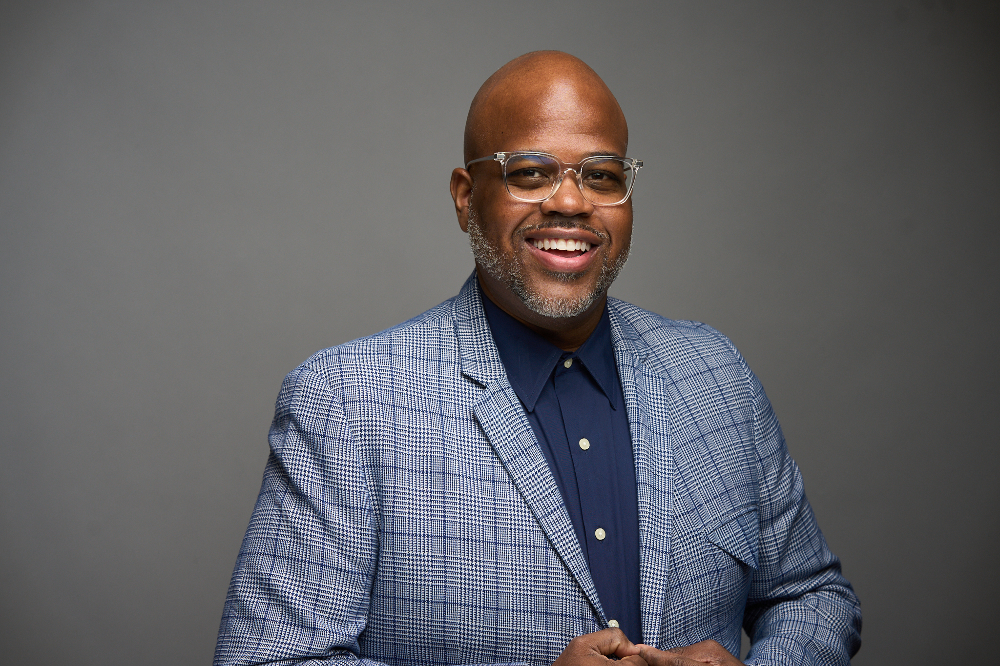

Chicago · AtlantaAI & Technology Leader
ITSM · Artificial Intelligence · Enterprise Operations
Dion Jones is an AI-driven operations strategist with nearly two decades of experience transforming enterprise support functions into intelligent, data-enabled platforms. Currently serving as Manager of ITSM Problem Management at Hyatt Hotels Corporation, he has accelerated IT maturity from 1.9 to 2.7 in under a year — embedding custom AI tools, predictive workflows, and executive-grade reporting across a global hospitality technology ecosystem.
A candidate for his MS in Artificial Intelligence at Kennesaw State University, Dion bridges the gap between operational rigor and applied AI — building NLP-based incident detection systems, custom GPTs for root cause analysis, and frameworks that move organizations from reactive response to systemic resilience.